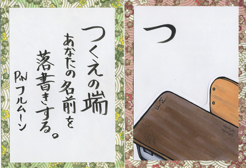
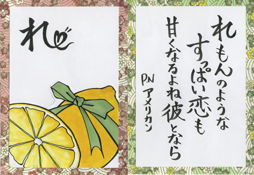
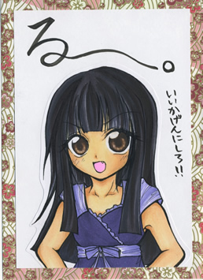
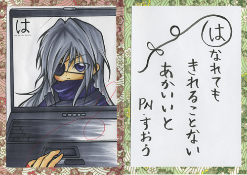

とりラジ（トリトリオフィスラジオ）
たけやんの「不可能なんてありえましぇ〜ん」
「高田初美と景浦大輔の萌えの細道。」【番組概要】
声優事務所「トリトリオフィス」のラジオ番組がついに登場！！
トリトリオフィスの様々な声優が隔週で、パーソナリティをつとめるラジオ。
第１・３週更新が、「たけやんの不可能なんてありえましぇ〜ん」
第２・４週更新が「高田初美と景浦大輔の萌えの細道。」
【番組紹介】
■西山丈也：たけやんの『不可能なんてありえましぇ〜ん』
ミュージカル「テニスの王子様」の「金色小春」役でお馴染み西山丈也の番組がスタート！！ 「不可能なんてない！！」そんな西山丈也の熱い思いをテーマに、 そして時にはリスナーからの悩みに答えたり、ふと日常生活で思っている・考えている事をトークしたり、リスナーと一緒に喜び楽しみを分かち合おう！という番組です。
「たけやんの不可能なんてありえましぇ〜ん」の番組ブログが出来ました。
みんな、ぜひチェックしてね♪
http://ameblo.jp/takeyan-blog/
声優の『桜咲千依』さんが遊びに来てくれました！！放送ぜひ聴いてね♪
■高田初美・景浦大輔：『高田初美と景浦大輔の萌えの細道。』
「萌え」とは何か・・・。その「萌え」を徹底的に追求する番組があったっていいじゃないか！！ あらゆる角度から「萌え」を追求・探求する番組が登場！！
リスナー参加型のコーナーが目白押し！！
皆さんの熱い「萌え」をこの番組を通じて教えてください！！

萌えラボコーナーの収録現場！！一番右端が『葵 海人』君。一番左端が『小林 桂子』ちゃんです。
「萌えの細道」のコーナーブログ開設！！
萌えラボの設定資料など掲載！！
http://ameblo.jp/moelab
ぜひチェックしてね♪


|
|||||||


たけやんの「不可能なんてありえましぇ〜ん」
■「成りきりたけやん」
こんなキャラ、こんなシチュエーションで、言ってもらいたいセリフを募集し、毎週その中の一つにチャレンジ！
例えば、幼なじみの女の子に告白する・・などなど
声優：西山丈也の本領発揮のコーナー！！
セリフの場合オリジナルのものに限らせていただきます。
■「たけやんの一言もの申す！」
西山丈也が日ごろ疑問や不満に思っていることを主張し、それについてみなさんからの意見を頂こう！というコーナー。
またリスナーさんからの日頃思っていることなども募集！！
ふとした小さなことから、大きなことまで何でもＯＫです。
■ 「なるほど・ザ ・ワード！」
乙女心って難しい〜そんな女性の心に歩み寄って、
素敵な男になるべく、いろんな言葉を勉強しよう！
例えば女性の皆さんはよく使うけど、男性陣にはさっぱり・・・なんて言葉ありますよね。
そんな言葉を募集して、たけやんに勉強してもらいましょう！
■「チキチキ映画予告タイム！」
制限時間（30秒）内に映画好きの西山丈也がオススメ映画を紹介するコーナー。
30秒以内にまとめることが出来るのか！？
また役者にとっては「滑舌」も必須です。
「この映画を紹介して欲しい」というリクエストもお待ちしてます。
■What's cooking？
このコーナーは、毎回お料理に関するテーマに沿ってお便りを頂き、
それを基にたけやんが一人で大討論会をしちゃうぞーとコーナー。
自炊バリバリの僕にあなたの知恵を貸して♪
■ふつおた
普通のお便りの紹介
そのほか、応援メッセージ・ご意見・ご感想・リクエスト企画などお待ちしてます☆
タイトル「高田初美と景浦大輔の萌えの細道。」
■萌えかるた
萌えるシチュエーションを集めたかるたを作ろうというコーナー。
毎回、お題の文字を一つ決め、読み札のネタを募集します。
そこから何個かを選び、中でも一番萌えるシチュエーションを読み札として決定！！
絵札はそれを元に高田がイラストを描き、後日公開します。
「萌えかるた」の今後のお題
「そ」「お」「く」「や」「ま」「け」「ふ」「こ」「え」「て」
「あ」「さ」「き」「ゆ」「め」「み」「し」「ひ」「も」「せ」「す」
大募集中です！！
「萌えかるた」の「つ」が決定！！

「萌えかるた」の「れ」が決定！！

「萌えかるた」の「た」が決定！！
「萌えかるた」の「よ」が決定！！
「萌えかるた」の「か」が決定！！
「萌えかるた」の「わ」が決定！！
「萌えかるた」の「を」が決定！！
「萌えかるた」の「る」が決定！！

「萌えかるた」の「ぬ」が決定！！
「萌えかるた」の「り」が決定！！
「萌えかるた」の「ち」が決定！！
「萌えかるた」の「と」が決定！！
「萌えかるた」の「へ」が決定！！
「萌えかるた」の「ほ」が決定！！
「萌えかるた」の「に」が決定！！
「萌えかるた」の「は」が決定！！

「萌えかるた」の「ろ」が決定！！
「萌えかるた」の「い」が決定！！
例）お題『い』
いつまでも 一緒だって言ったじゃない 幼なじみの愛の告白
お題『ろ』
路地裏で 猫に餌やる君にドキドキ☆ そんな笑顔初めて見たし
■妄想☆萌えゲーム制作研究所
所長・高田、研究員・景浦、そしてリスナーの皆さんももちろん研究員！！
このメンバーが一丸となって、ゲームのストーリーやキャラクターを妄想し、
みんなの夢と希望がたっぷり詰まった作品を作っていこう！！というコーナー！！
テーマを元に、ストーリーやキャラクターの設定などを妄想。
研究員であるリスナーの皆さんには、
・ どんなキャラクターを出したいか
・ こういうイベントがあったらいいんじゃないか
・ このキャラクターにはこんな台詞を言って欲しい！！
・ などなど
もしかした妄想した作品が形になるかも！？
皆さんからの妄想、どしどしお待ちしております！！
■萌えヶ原の合戦
自分が萌える『あれ』って実は少数派！？？
お題とある二つのうち、どちらが萌えるかを選んでもらい、
集計してみようというコーナー。
例えば、『スーツ』か『白衣』か、『幼なじみ』か『妹』か、などなど。
高田と景浦もどちらかに分かれ、意見を言ったり、それぞれのリスナーの意見を発表！！
負けた方には罰ゲームも待ってる！？
■ふつおた
普通のお便りの紹介
■今日の一句
景浦大輔が今日の収録をテーマに一句詠みます。
そのほか、応援メッセージ・ご意見・ご感想・リクエスト企画などお待ちしてます☆


番組へのご意見・ご感想をお待ちしております！
◆お便りはこちら◆
【宛先】〒107-8880 赤坂郵便局留
インターネットコミュニティ ぽけら 「とりラジ」